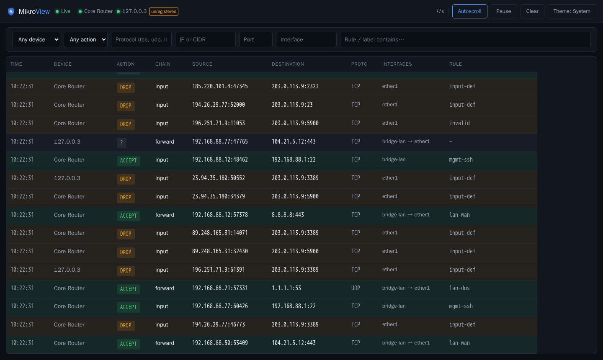
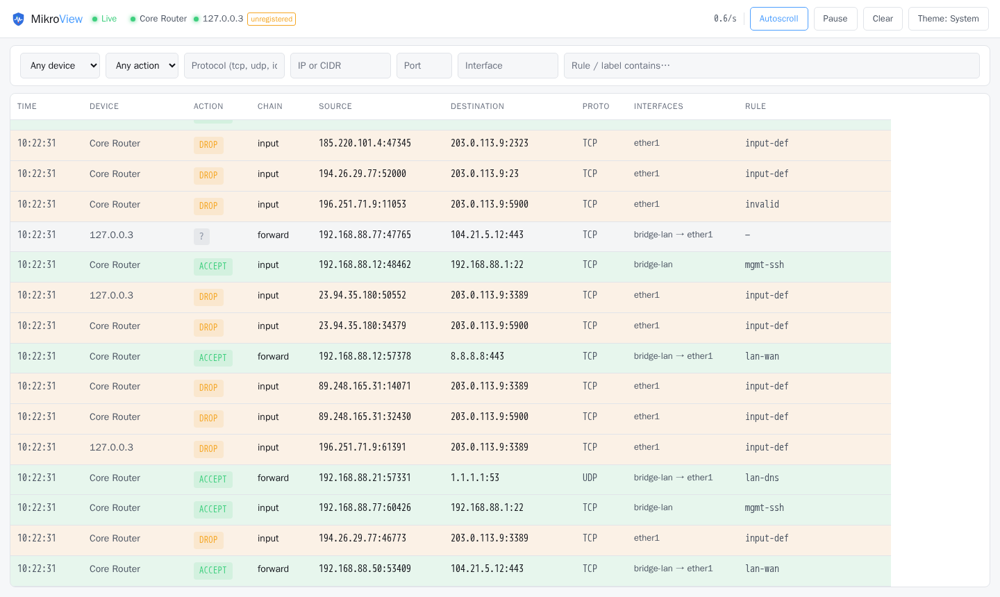

RouterOS · Firewall live view
MikroView turns RouterOS's firewall log into a real-time, filterable live
view. Every connection, accepted, dropped, or rejected, and by which
rule. Syslog-based, so there's no API access and no credentials on the
router — just docker compose up.
Why syslog, not the API
RouterOS forwards firewall log lines over syslog. No API access, no credentials, no polling loop hammering the router — just a stream it was already capable of sending.
Every row is color-coded by what actually happened — accepted, dropped, rejected — and which rule made that call, decoded from a short log-prefix convention.
A single Go binary with the UI embedded, shipped in a distroless
image under 30MB. docker compose up and you're watching
traffic.
Device, IP or CIDR, port, protocol, interface, rule label — all client-side, all instant, no round-trip to the server.
Port scans, activity spikes, repeated hits on critical ports (SSH, RDP, Winbox...) and a dozen more detectors raise a flag for a human to review — never an automatic action. A watchlist covers the other direction: what should happen, and what deviated.
HTTPS out of the box with a self-generated certificate, local accounts or OIDC/SSO sign-in, and no data leaves your network.
In your browser


Quickstart
$ docker run -d --name mikroview \ -p 6514:6514/tcp -p 443:8080 \ ghcr.io/tomlawesome/mikroview:latest
Then point RouterOS at it — syslog over TLS (RouterOS 7.18+), and the built-in guided wizard writes every command with your values already filled in. Reference: docs/routeros-setup.md.